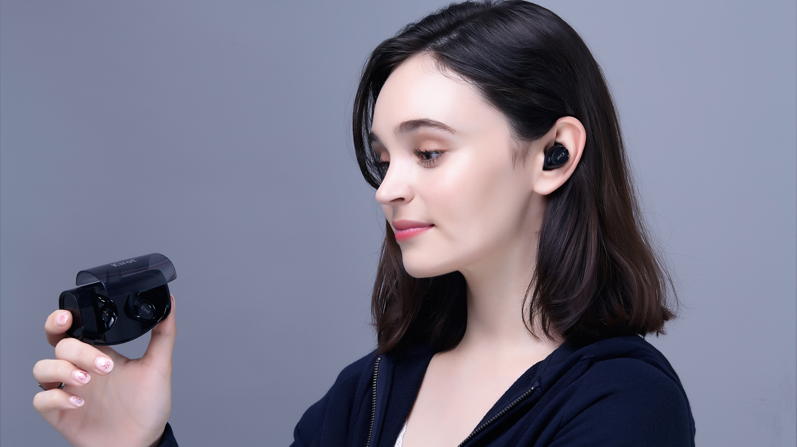
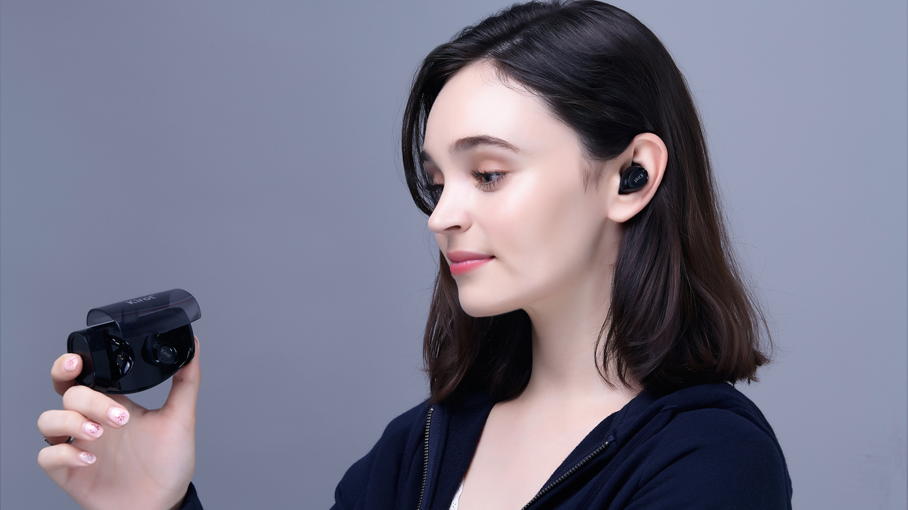

Scorpio 真无线蓝牙耳机
立即购买
采用新一代蓝牙5.0芯片，有着更快的传输速度和更稳定的传输信号。其低功耗长续航的特点，能给您带来更完整的听觉盛宴。
6mm金属腔体喇叭，石墨烯振膜，确保音乐传输过程中高保真的同时又不失立体音效
高速的信号传输，无论您在吃鸡战场还是王者峡谷，都能感受到丰富的声效细节，让您声临其境勇夺胜利。
耳机本体采用IPX7级防水，不论大汗淋漓的运动或是自由自在的水中畅游，都能给您带来如常的聆听盛宴。
无论是居家做饭还是户外运动无线无束缚的佩戴，都能让您随时享受音乐不间断。
 

经过多个月的匠心调校，
做到了中高音细腻的同时不乏低音的补充，
让丰富有层次的声音深入到您的内心，
给您带来置身现场的体验。
真正的无线连接方式仅4g的机身，
摆脱线材的束缚，
重量和人体工学设计的耳帽耳挂，
舒适佩戴无痛感。
450mAh大容量耳机充电舱，在您收纳的同时自动为耳机充电，给您长达70小时的持续续航。
支持iOS和Android系统，随时随地掌握电量情况，
让您一目了然，从此音乐不间断。
强大的蓝牙芯片，兼容市面上各品牌设备。无论手机、平板，
还是电脑、电视，有蓝牙就能进行匹配连接。